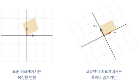
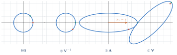

행렬의 대각화
이 장을 마치면
9장에서 고유벡터가 "방향이 변하지 않는 축"임을 배웠다. 그런데 그 축들을 알아서 무엇에 쓸까?
답은 좌표계를 바꾸는 데 쓴다. 우리가 익숙한 \(x\)축, \(y\)축 대신 고유벡터를 축으로 삼는 새 좌표계를 도입하면, 복잡했던 변환이 각 축에서 단순히 곱하기가 된다. 행렬로 말하면 대각행렬이 된다. 대각행렬은 거듭제곱도, 역행렬도, 지수함수도 쉽게 계산되므로, 원래 문제로 되돌아왔을 때 모든 것이 풀려 있다.
이것이 대각화diagonalization이며, 이 장의 주제다. 그리고 이 아이디어는 다음 장의 특이값 분해로 그대로 이어진다.
10.1 대각화는 왜 필요한가
\(\mm{A}^{100}\)을 구하라고 하면
행렬 \(\mm{A} = \mtwo{1.4}{0.6}{0.3}{1.1}\)의 100제곱을 구해야 한다고 하자. 곧이곧대로 하면 행렬 곱을 99번 해야 한다. \(n\times n\)이면 \(99n^3\)번의 곱셈이다.
그런데 만약 \(\mm{A}\)가 대각행렬이었다면 어떨까?
계산이라고 할 것도 없다. 대각성분을 각각 100제곱하면 끝이다. 곱셈이 \(n\)번뿐이다.
대각행렬은 모든 계산이 쉽다. 거듭제곱은 성분의 거듭제곱, 역행렬은 성분의 역수, 행렬식은 성분의 곱, 고유값은 성분 그 자체다. 대각화의 목표는 임의의 행렬을 대각행렬처럼 다룰 수 있게 만드는 것이다.
import numpy as np
import time
rng = np.random.default_rng(0)
n = 200
A = rng.normal(0, 1, (n, n)) / np.sqrt(n)
D = np.diag(rng.uniform(0.5, 1.5, n))
t0 = time.time(); np.linalg.matrix_power(A, 100); t1 = time.time() - t0
t0 = time.time(); np.diag(np.diag(D) ** 100); t2 = time.time() - t0
print(f'일반 행렬의 100제곱 : {t1:.4f} sec')
print(f'대각행렬의 100제곱 : {t2:.6f} sec')일반 행렬의 100제곱 : 0.0005 sec 대각행렬의 100제곱 : 0.000023 sec
좌표계를 바꾼다는 발상
\(\mm{A}\)가 대각행렬이 아니어도, 보는 각도를 바꾸면 대각행렬처럼 보이게 할 수 있을까?
\(\mm{A}\)의 고유벡터 \(\vv{v}_1, \vv{v}_2\)를 생각하자. 이 방향에서 \(\mm{A}\)는 각각 \(\lambda_1\)배, \(\lambda_2\)배를 하는 것이 전부다. 그렇다면 \(\vv{v}_1, \vv{v}_2\)를 새로운 좌표축으로 삼으면, 그 좌표계에서 \(\mm{A}\)는 정확히 \(\diag(\lambda_1, \lambda_2)\)가 된다.

좌표 변환의 행렬
고유벡터를 열로 모은 행렬을 \(\mm{V} = [\vv{v}_1\ \vv{v}_2]\)라 하자. 이 행렬이 하는 일은 무엇인가? 5장에서 배운 대로 \(\mm{V}\vv{e}_1 = \vv{v}_1\)이므로, \(\mm{V}\)는 표준기저를 고유벡터로 옮기는 변환이다.
거꾸로 \(\mm{V}\inv\)은 고유벡터를 표준기저로 옮긴다. 다시 말해 \(\mm{V}\inv\vv{x}\)는 \(\vv{x}\)를 고유벡터 좌표계에서 읽은 좌표다.
\(\vv{v}_1 = (1,1)\), \(\vv{v}_2 = (1,-1)\)일 때, 벡터 \(\vv{x} = (5, 1)\)을 고유벡터 좌표계에서 읽으시오.
import numpy as np
V = np.array([[1., 1.],
[1., -1.]])
x = np.array([5., 1.])
c = np.linalg.solve(V, x) # V c = x 를 푸는 것
print('고유벡터 좌표계에서의 좌표 :', c)
print('되돌리기 V @ c :', V @ c)
print('inv(V) @ x :', np.linalg.inv(V) @ x)고유벡터 좌표계에서의 좌표 : [3. 2.] 되돌리기 V @ c : [5. 1.] inv(V) @ x : [3. 2.]
세 단계로 나누기
이제 \(\mm{A}\vv{x}\)를 계산하는 새로운 방법이 보인다.
이 세 단계를 이어 붙이면
가 된다. 이것이 고유값 분해이며 다음 절의 주제다. 오른쪽부터 읽어야 한다는 점에 주의하자(5장에서 배운 대로 행렬 곱은 오른쪽부터 적용된다).
10.2 대각화와 고유값 분해
정의
정방행렬 \(\mm{A}\)에 대하여 가역행렬 \(\mm{V}\)와 대각행렬 \(\mm{\Lambda}\)가 존재하여
\(\mm{V}\)와 \(\mm{\Lambda}\)가 무엇인지는 이미 알고 있다. 고유값 방정식 \(\mm{A}\vv{v}_i = \lambda_i\vv{v}_i\)를 모든 \(i\)에 대해 한꺼번에 적어 보자.
즉 \(\mm{A}\mm{V} = \mm{V}\mm{\Lambda}\)이고, \(\mm{V}\)가 가역이면 양변에 \(\mm{V}\inv\)을 곱해 식 \(\eqref{eq:ch10_diag}\)을 얻는다.
\(\mm{A} \in \Rmat{n}{n}\)이 대각화 가능할 필요충분조건은 일차독립인 고유벡터가 \(n\)개 존재하는 것이다.
특히 다음 두 경우에는 반드시 대각화 가능하다.
- \(n\)개의 고유값이 모두 서로 다르다.
- \(\mm{A}\)가 실대칭행렬이다 (이때 \(\mm{V}\)는 직교행렬이 된다).
import numpy as np
A = np.array([[4., 1.],
[2., 3.]])
w, V = np.linalg.eig(A)
Lam = np.diag(w)
print('V =\n', np.round(V, 4))
print('Lambda =\n', np.round(Lam, 4))
print('V @ Lam @ inv(V) == A :',
np.allclose(V @ Lam @ np.linalg.inv(V), A))
print('inv(V) @ A @ V == Lam :',
np.allclose(np.linalg.inv(V) @ A @ V, Lam))V = [[ 0.7071 -0.4472] [ 0.7071 0.8944]] Lambda = [[5. 0.] [0. 2.]] V @ Lam @ inv(V) == A : True inv(V) @ A @ V == Lam : True
거듭제곱이 쉬워진다
고유값 분해의 첫 번째 보상은 거듭제곱이다.
가운데의 \(\mm{V}\inv\mm{V}\)가 사라지는 것이 핵심이다. 이것이 반복되면
import numpy as np
import time
A = np.array([[4., 1.],
[2., 3.]])
w, V = np.linalg.eig(A)
Vinv = np.linalg.inv(V)
k = 30
direct = np.linalg.matrix_power(A, k)
via_eig = V @ np.diag(w ** k) @ Vinv
print('직접 곱한 결과 :\n', direct)
print('분해 이용 :\n', np.round(np.real(via_eig), 4))
print('같은가 :', np.allclose(direct, np.real(via_eig)))직접 곱한 결과 : [[6.20881716e+20 3.10440858e+20] [6.20881716e+20 3.10440858e+20]] 분해 이용 : [[6.20881716e+20 3.10440858e+20] [6.20881716e+20 3.10440858e+20]] 같은가 : True
30제곱만으로도 값이 \(10^{20}\) 수준까지 커졌다. \(\lambda_1 = 5\)이므로 \(5^{30} \approx 9.3\times10^{20}\)이고, 이 항이 결과를 지배한다. 9장에서 배운 "가장 큰 고유값이 살아남는다"는 사실이 숫자로 확인된다.
대칭행렬의 경우: 직교 대각화
\(\mm{A}\)가 실대칭행렬이면 9장에서 배운 대로 고유벡터를 서로 직교하는 단위벡터로 잡을 수 있다. 그러면 \(\mm{V}\)는 직교행렬 \(\mm{Q}\)가 되고, 6장에서 배운 대로 \(\mm{Q}\inv = \mm{Q}\tp\)이다.
실대칭행렬 \(\mm{A}\)는 언제나 다음과 같이 분해된다.
역행렬을 구할 필요가 없다는 것이 큰 이점이다. 계산이 빨라지고 오차도 줄어든다.
식 \(\eqref{eq:ch10_spectral}\)의 두 번째 표현도 중요하다. 5장에서 배운 "랭크-1 조각의 합" 관점이며, 대칭행렬이 \(n\)개의 정사영의 가중합으로 분해된다는 뜻이다. 각 \(\vv{q}_i\vv{q}_i\tp\)는 \(\vv{q}_i\) 방향으로의 정사영 행렬이다. 이 표현이 11장의 특이값 분해로 바로 이어진다.
import numpy as np
rng = np.random.default_rng(1)
M = rng.normal(0, 1, (4, 4))
A = (M + M.T) / 2 # 대칭
w, Q = np.linalg.eigh(A)
print('Q가 직교행렬인가 :', np.allclose(Q.T @ Q, np.eye(4)))
print('Q Lambda Q.T == A :', np.allclose(Q @ np.diag(w) @ Q.T, A))
# 랭크-1 조각의 합으로도 확인
S = sum(w[i] * np.outer(Q[:, i], Q[:, i]) for i in range(4))
print('조각의 합 == A :', np.allclose(S, A))Q가 직교행렬인가 : True Q Lambda Q.T == A : True 조각의 합 == A : True
대각화가 안 되는 경우
모든 행렬이 대각화되는 것은 아니다. 고유벡터가 부족한 경우가 있다.
import numpy as np
A = np.array([[2., 1.],
[0., 2.]]) # 고유값 2가 두 번 (중복)
w, V = np.linalg.eig(A)
print('고유값 :', w)
print('고유벡터 :\n', np.round(V, 6))
print('V의 랭크 :', np.linalg.matrix_rank(V)) # 2가 아니면 대각화 불가
print('det(V) :', np.linalg.det(V))고유값 : [2. 2.] 고유벡터 : [[ 1. -1.] [ 0. 0.]] V의 랭크 : 1 det(V) : 4.4408920985006143e-16
고유값 2가 두 번 나왔지만 고유벡터는 사실상 \((1,0)\) 하나뿐이다. 두 열이 같은 방향이므로 \(\mm{V}\)가 특이행렬이고, \(\mm{V}\inv\)이 존재하지 않으니 대각화가 불가능하다.
이런 행렬을 결손행렬defective matrix이라 한다. 기하적으로는 전단(shear)이 섞여 있는 변환이며, 전단은 어떤 좌표계에서도 단순한 배율로 바뀌지 않는다.
np.linalg.eig는 결손행렬에 대해서도 오류 없이 결과를 돌려준다. 고유벡터가 거의 같은 방향임을 알아채려면 \(\mm{V}\)의 랭크나 조건수를 직접 확인해야 한다. 실전에서는 \(\mm{V}\)가 특이행렬에 가까울 때 \(\mm{V}\inv\)의 오차가 폭발하므로 반드시 점검해야 한다.
두 가지 길이 있다.
첫째, 조르당 표준형을 쓴다. 완전한 대각행렬 대신 대각선 바로 위에 1이 몇 개 붙은 "거의 대각인" 형태로 만드는 것이다. 이론적으로는 완결된 답이지만 수치적으로 매우 불안정해 실무에서는 거의 쓰지 않는다.
둘째, 특이값 분해를 쓴다. SVD는 결손행렬이든 정방행렬이 아니든 상관없이 모든 행렬에 대해 존재하며, 수치적으로도 안정적이다. 11장에서 다룰 이 분해가 실무에서 고유값 분해를 대체하는 이유가 여기에 있다.
10.3 고유값 분해의 기하적 의미
세 장면으로 나누어 보기
\(\mm{A} = \mm{V}\mm{\Lambda}\mm{V}\inv\)을 도형에 적용하는 과정을 한 단계씩 그려 보면 대각화가 무엇인지 몸으로 이해할 수 있다. 오른쪽부터 적용된다는 점을 기억하자.
| 단계 | 하는 일 | |
|---|---|---|
| ① | \(\mm{V}\inv\) | 고유벡터 축이 표준축이 되도록 좌표계를 돌린다 |
| ② | \(\mm{\Lambda}\) | 각 축 방향으로 \(\lambda_i\)배씩 늘이거나 줄인다 |
| ③ | \(\mm{V}\) | 원래 좌표계로 되돌린다 |
import numpy as np
import matplotlib.pyplot as plt
from lautils import *
A = np.array([[2., 1.],
[1., 2.]]) # 대칭 -> V가 직교행렬
w, V = np.linalg.eigh(A)
Vinv = V.T # 직교행렬이므로 전치가 역행렬
t = np.linspace(0, 2 * np.pi, 200)
circle = np.column_stack([np.cos(t), np.sin(t)])
marks = np.column_stack([np.cos(t[::25]), np.sin(t[::25])]) # 추적용 점
stages = [
(np.eye(2), 'original'),
(Vinv, 'step 1: V inverse'),
(np.diag(w) @ Vinv, 'step 2: Lambda'),
(V @ np.diag(w) @ Vinv, 'step 3: V (= A)'),
]
fig, axes = plt.subplots(1, 4, figsize=(14, 3.6))
for ax, (M, title) in zip(axes, stages):
ax.set_xlim(-4, 4); ax.set_ylim(-4, 4)
ax.set_aspect('equal'); ax.grid(True, alpha=0.3)
ax.axhline(0, color='black', lw=0.5); ax.axvline(0, color='black', lw=0.5)
C = transform(M, circle)
ax.plot(C[:, 0], C[:, 1], color='steelblue', lw=1.6)
draw_points(ax, transform(M, marks), color='crimson', s=22)
ax.set_title(title, fontsize=9)
plt.tight_layout(); plt.show()
print('고유값 :', w)
원이 타원이 되는 과정에서 무슨 일이 일어났는지 보라. \(\mm{V}\inv\)이 고유방향을 좌표축에 맞추고, \(\mm{\Lambda}\)가 축을 따라 늘이고, \(\mm{V}\)가 원래 방향으로 되돌려 놓았다. 대칭행렬에서는 \(\mm{V}\)가 직교행렬이므로 ①과 ③이 정확히 서로 반대인 회전이다.
대칭행렬의 작용 = 회전 \(\to\) 축별 확대 \(\to\) 회전 되돌리기
이 구조가 11장의 특이값 분해에서 모든 행렬로 확장된다. 다만 그때는 앞뒤의 두 회전이 서로 다른 회전이 된다.
닮음변환 — 같은 변환의 다른 표현
\(\mm{V}\inv\mm{A}\mm{V}\)처럼 생긴 조작에는 이름이 있다.
가역행렬 \(\mm{P}\)에 대하여 \(\mm{B} = \mm{P}\inv\mm{A}\mm{P}\)이면 \(\mm{A}\)와 \(\mm{B}\)는 닮음similar이라 한다.
닮은 두 행렬은 같은 변환을 서로 다른 좌표계에서 표현한 것이다. 그러므로 좌표계와 무관한 성질은 모두 같아야 한다.
\(\mm{A}\)와 \(\mm{B} = \mm{P}\inv\mm{A}\mm{P}\)에 대하여
import numpy as np
rng = np.random.default_rng(2)
A = rng.normal(0, 1, (4, 4))
P = rng.normal(0, 1, (4, 4))
B = np.linalg.inv(P) @ A @ P
print('고유값 같은가 :',
np.allclose(np.sort_complex(np.linalg.eig(A)[0]),
np.sort_complex(np.linalg.eig(B)[0])))
print('trace :', round(np.trace(A), 8), round(np.trace(B), 8))
print('det :', round(np.linalg.det(A), 8), round(np.linalg.det(B), 8))
print('rank :', np.linalg.matrix_rank(A), np.linalg.matrix_rank(B))고유값 같은가 : True trace : 2.21158865 2.21158865 det : 1.84738442 1.84738442 rank : 4 4
이 관점에서 보면 대각화는 "주어진 행렬과 닮은 것 중 가장 단순한 것(대각행렬)을 찾는 일"이다. 그리고 9장에서 확인했던 사실, 즉 소거법으로 얻은 삼각행렬의 고유값이 원래와 다른 이유도 이제 명확하다. 기본행연산은 \(\mm{P}\inv\mm{A}\mm{P}\) 꼴이 아니라 \(\mm{E}\mm{A}\) 꼴이므로 닮음변환이 아니기 때문이다.
행렬 함수 — 지수함수까지
식 \(\eqref{eq:ch10_power}\)은 거듭제곱에 관한 것이었지만, 같은 논리로 어떤 함수든 행렬에 적용할 수 있다. 다항식이든, 지수함수든, 제곱근이든 대각성분에만 적용하면 된다.
특히 행렬 지수함수matrix exponential \(e^{\mm{A}} = \sum_k \mm{A}^k/k!\)는 미분방정식의 해를 표현하는 핵심 도구이며, 물리 시뮬레이션과 제어 이론에서 필수적이다.
import numpy as np
A = np.array([[1., 1.],
[0., 2.]])
w, V = np.linalg.eig(A)
# 고유값 분해로 계산한 행렬 지수함수
expA = V @ np.diag(np.exp(w)) @ np.linalg.inv(V)
print('exp(A) (분해 이용):\n', np.round(expA, 6))
# 급수를 직접 더해 확인
S = np.zeros((2, 2))
term = np.eye(2)
for k in range(30):
S += term
term = term @ A / (k + 1)
print('exp(A) (급수 30항):\n', np.round(S, 6))
# 제곱근도 마찬가지
sqrtA = V @ np.diag(np.sqrt(w)) @ np.linalg.inv(V)
print('sqrt(A) @ sqrt(A) == A :', np.allclose(sqrtA @ sqrtA, A))exp(A) (분해 이용): [[2.718282 4.670774] [0. 7.389056]] exp(A) (급수 30항): [[2.718282 4.670774] [0. 7.389056]] sqrt(A) @ sqrt(A) == A : True
무한급수를 30항까지 더한 결과와 대각화로 한 번에 구한 결과가 일치한다. 대각화는 행렬 계산을 스칼라 계산으로 바꾸는 장치라는 것을 다시 확인할 수 있다.
10.4 대각화의 활용과 근사 계산
마르코프 연쇄와 정상상태
날씨, 인구 이동, 웹 서핑처럼 상태가 확률적으로 옮겨 다니는 현상을 마르코프 연쇄Markov chain로 모형화한다. 상태 사이의 전이 확률을 행렬로 적고, 현재 분포에 곱하면 다음 시점의 분포가 나온다.
식 \(\eqref{eq:ch10_power}\)에 따르면 \(\mm{M}^k = \mm{V}\mm{\Lambda}^k\mm{V}\inv\)이므로, \(k\)가 커질 때의 거동은 고유값이 결정한다. 전이행렬은 각 열의 합이 1이므로 항상 고유값 1을 가지며, 나머지 고유값의 절댓값은 1보다 작다. 따라서
가 된다. 이 극한 분포를 정상상태steady state라 한다. 시뮬레이션을 오래 돌릴 필요 없이 고유벡터 한 번 구하면 답이 나온다.
import numpy as np
import matplotlib.pyplot as plt
# 날씨 모형: 맑음, 흐림, 비 (열의 합이 1)
M = np.array([[0.8, 0.3, 0.2],
[0.15, 0.5, 0.3],
[0.05, 0.2, 0.5]])
labels = ['sunny', 'cloudy', 'rainy']
x = np.array([1., 0., 0.]) # 오늘은 맑음
hist = [x]
for _ in range(20):
x = M @ x
hist.append(x)
hist = np.array(hist)
w, V = np.linalg.eig(M)
idx = np.argmin(np.abs(w - 1)) # 고유값 1 찾기
steady = np.real(V[:, idx]); steady /= steady.sum()
print('고유값 :', np.round(np.real(w), 6))
print('정상상태 :', np.round(steady, 6))
print('20일 후 :', np.round(hist[-1], 6))
plt.figure(figsize=(6, 3.6))
for j, lab in enumerate(labels):
plt.plot(hist[:, j], label=lab)
plt.axhline(steady[j], ls='--', lw=0.8, color='gray')
plt.xlabel('day'); plt.ylabel('probability')
plt.legend(); plt.grid(True, alpha=0.3)
plt.show()고유값 : [1. 0.558114 0.241886] 정상상태 : [0.567164 0.268657 0.164179] 20일 후 : [0.567168 0.268655 0.164177]
시뮬레이션 20일 결과와 고유벡터 계산이 소수점 다섯 자리까지 일치한다. 게다가 나머지 고유값이 약 0.56과 0.24이므로, 수렴 속도가 대략 \(0.56^k\) 비율임도 알 수 있다. 둘째로 큰 고유값의 절댓값이 작을수록 빨리 수렴한다.
구글의 초기 검색 순위 알고리즘 페이지랭크PageRank는 정확히 이 아이디어다. 웹 페이지를 상태로, 링크를 전이로 보아 거대한 전이행렬 \(\mm{M}\)을 만들고, 그 정상상태(고유값 1의 고유벡터)를 구한다. 정상상태에서 확률이 높은 페이지가 곧 "중요한 페이지"다.
문제는 규모다. 웹 페이지가 수십억 개이므로 \(\mm{M}\)은 수십억 \(\times\) 수십억 행렬이다. 특성방정식은 물론이고 고유값 분해도 불가능하다. 그래서 9장에서 배운 거듭제곱법을 쓴다. 행렬-벡터 곱만 반복하면 되고, \(\mm{M}\)이 희소행렬이라 한 번의 곱셈도 링크 수에 비례하는 비용으로 끝난다. 수십 번 반복하면 충분히 수렴한다.
피보나치 수열을 닫힌 식으로
대각화의 고전적인 응용 하나를 보자. 피보나치 수열 \(F_{k+1} = F_k + F_{k-1}\)은 다음 행렬로 표현된다.
이 행렬의 고유값은 \(\phi = \frac{1+\sqrt5}{2}\)(황금비)와 \(\psi = \frac{1-\sqrt5}{2}\)이다. 대각화하면 피보나치 수의 닫힌 식을 얻는다.
import numpy as np
F = np.array([[1., 1.],
[1., 0.]])
w, V = np.linalg.eig(F)
print('고유값 :', np.round(w, 8), ' (황금비 =', (1 + np.sqrt(5)) / 2, ')')
phi, psi = w
for k in [10, 20, 30]:
closed = (phi ** k - psi ** k) / np.sqrt(5)
by_power = np.linalg.matrix_power(F.astype(object), k)[0, 1]
print(f'F_{k:2d} : 닫힌식 {closed:12.1f}, 행렬거듭제곱 {by_power}')고유값 : [ 1.61803399 -0.61803399] (황금비 = 1.618033988749895 ) F_10 : 닫힌식 55.0, 행렬거듭제곱 55.0 F_20 : 닫힌식 6765.0, 행렬거듭제곱 6765.0 F_30 : 닫힌식 832040.0, 행렬거듭제곱 832040.0
반복해서 더해야 알 수 있던 수를 \(k\)에 대한 식 하나로 구했다. 이것이 대각화의 힘이다. 그리고 \(\abs{\psi} < 1\)이므로 \(k\)가 커지면 \(\psi^k\)는 무시할 수 있게 되고, \(F_k \approx \phi^k/\sqrt5\)가 된다. 피보나치 수가 황금비의 거듭제곱으로 커지는 이유가 여기에 있다.
고유값의 근사 계산
앞서 보았듯 특성방정식은 실용적인 계산 도구가 아니다. 대규모 문제에서 실제로 쓰이는 방법 세 가지를 정리해 두자.
| 방법 | 특징 |
|---|---|
| 거듭제곱법 | 가장 큰 고유값 하나만 구한다. 행렬-벡터 곱만 필요해 희소행렬에 적합 |
| 역거듭제곱법 | \(\mm{A}\inv\)에 거듭제곱법을 적용해 가장 작은 고유값을 구한다 |
| QR 알고리즘 | 모든 고유값을 구한다. 넘파이 eig가 쓰는 방법 (12장) |
역거듭제곱법의 아이디어는 간단하다. 9장에서 \(\mm{A}\inv\)의 고유값이 \(1/\lambda\)임을 배웠다. 따라서 \(\mm{A}\)의 가장 작은 고유값은 \(\mm{A}\inv\)의 가장 큰 고유값에 대응한다.
import numpy as np
def inverse_power(A, iters=200, seed=0):
"""가장 작은 고유값을 구한다 (역거듭제곱법)."""
rng = np.random.default_rng(seed)
v = rng.normal(0, 1, A.shape[0]); v /= np.linalg.norm(v)
for _ in range(iters):
w = np.linalg.solve(A, v) # inv(A) @ v 대신 solve
v = w / np.linalg.norm(w)
return v @ A @ v, v
rng = np.random.default_rng(4)
M = rng.normal(0, 1, (5, 5))
A = (M + M.T) / 2 + 5 * np.eye(5) # 대칭 양정치로 만들기
lam_min, v = inverse_power(A)
print('역거듭제곱법 :', round(lam_min, 8))
print('넘파이 최소 :', round(np.linalg.eigh(A)[0].min(), 8))역거듭제곱법 : 2.12094616 넘파이 최소 : 2.12094616
np.linalg.inv(A) @ v 대신 np.linalg.solve(A, v)를 쓴 점에 주목하자. 6장에서 배운 원칙이 그대로 적용된다.
- 마르코프 연쇄의 정상상태 = 고유값 1의 고유벡터다. 시뮬레이션 없이 한 번에 구한다.
- 점화식은 행렬 거듭제곱이고, 대각화하면 닫힌 식이 나온다(피보나치와 황금비).
- 대규모 문제에서는 거듭제곱법(최대), 역거듭제곱법(최소), QR 알고리즘(전체)을 쓴다.
- 고유값 분해를 만들고 검증하자. 무작위 행렬을 대각화하고 \(\mm{A} = \mm{V}\mm{\Lambda}\mm{V}\inv\)이 성립하는지 확인하시오.
import numpy as np rng = np.random.default_rng(0) A = rng.normal(0, 1, (4, 4)) w, V = np.linalg.eig(A) Lam = np.diag(w) print('A == V Lam inv(V) :', np.allclose(A, V @ Lam @ np.linalg.inv(V))) print('inv(V) A V == Lam :', np.allclose(np.linalg.inv(V) @ A @ V, Lam)) print('V의 조건수 :', round(np.linalg.cond(V), 3))조건수가 크면 \(\mm{V}\inv\)의 오차가 커져 분해를 신뢰하기 어렵다. 대칭행렬은 조건수가 정확히 1이다.
- 대각화의 세 단계를 애니메이션처럼 그리자. 원이 타원이 되는 과정을 여섯 장으로 나누어 그리시오.
import numpy as np import matplotlib.pyplot as plt from lautils import * A = np.array([[3., 1.], [1., 2.]]) w, V = np.linalg.eigh(A) steps = [np.eye(2), V.T, np.diag(w) @ V.T, A] names = ['start', 'rotate (V.T)', 'stretch (Lambda)', 'rotate back (V)'] t = np.linspace(0, 2 * np.pi, 200) circle = np.column_stack([np.cos(t), np.sin(t)]) dots = circle[::20] fig, axes = plt.subplots(1, 4, figsize=(13, 3.5)) for ax, M, name in zip(axes, steps, names): ax.set_xlim(-4.5, 4.5); ax.set_ylim(-4.5, 4.5) ax.set_aspect('equal'); ax.grid(True, alpha=0.3) ax.axhline(0, color='black', lw=0.5); ax.axvline(0, color='black', lw=0.5) C = transform(M, circle) ax.plot(C[:, 0], C[:, 1], color='steelblue', lw=1.5) draw_points(ax, transform(M, dots), color='crimson', s=18) ax.set_title(name, fontsize=9) plt.tight_layout(); plt.show() - 거듭제곱을 두 방법으로 계산하고 속도를 비교하자.
import numpy as np import time rng = np.random.default_rng(1) n, k = 300, 500 M = rng.normal(0, 1, (n, n)) A = (M + M.T) / 2 # 대칭 -> 안정적인 분해 t0 = time.time(); P1 = np.linalg.matrix_power(A, k); t1 = time.time() - t0 t0 = time.time() w, Q = np.linalg.eigh(A) P2 = Q @ np.diag(w ** k) @ Q.T t2 = time.time() - t0 print(f'직접 거듭제곱 : {t1:.4f} sec') print(f'대각화 이용 : {t2:.4f} sec') print('상대 오차 :', np.abs(P1 - P2).max() / np.abs(P1).max()) - 대각화가 안 되는 행렬을 찾아보자. 여러 행렬에 대해 고유벡터 행렬의 랭크를 확인하시오.
import numpy as np mats = { 'distinct eig' : np.array([[4., 1.], [2., 3.]]), 'symmetric' : np.array([[2., 1.], [1., 2.]]), 'shear' : np.array([[2., 1.], [0., 2.]]), 'identity' : np.eye(2), } for name, A in mats.items(): w, V = np.linalg.eig(A) r = np.linalg.matrix_rank(V) print(f'{name:14s}: 고유값 {np.round(w, 3)}, rank(V)={r}, ' f'대각화 {"가능" if r == 2 else "불가능"}')distinct eig : 고유값 [5. 2.], rank(V)=2, 대각화 가능 symmetric : 고유값 [3. 1.], rank(V)=2, 대각화 가능 shear : 고유값 [2. 2.], rank(V)=1, 대각화 불가능 identity : 고유값 [1. 1.], rank(V)=2, 대각화 가능
단위행렬은 고유값이 중복되지만 대각화가 가능하다(이미 대각행렬이므로). 고유값의 중복 자체가 문제가 아니라 고유벡터의 부족이 문제임을 확인하자.
- 마르코프 연쇄의 정상상태를 구하자. 네 개의 웹 페이지로 이루어진 작은 웹의 페이지랭크를 계산하시오.
import numpy as np # 링크 구조: L[i][j] = 1 이면 j -> i 링크 L = np.array([[0., 1., 1., 0.], [1., 0., 0., 1.], [1., 1., 0., 1.], [0., 0., 1., 0.]]) M = L / L.sum(axis=0) # 열 정규화 -> 전이행렬 # 방법 1: 고유벡터 w, V = np.linalg.eig(M) idx = np.argmin(np.abs(w - 1)) rank_eig = np.real(V[:, idx]); rank_eig /= rank_eig.sum() # 방법 2: 거듭제곱법 x = np.ones(4) / 4 for _ in range(100): x = M @ x x /= x.sum() print('고유벡터법 :', np.round(rank_eig, 6)) print('거듭제곱법 :', np.round(x, 6)) print('가장 중요한 페이지 :', np.argmax(x)) - 행렬 지수함수로 미분방정식을 풀자. \(\vv{x}'(t) = \mm{A}\vv{x}(t)\)의 해 \(\vv{x}(t) = e^{\mm{A}t}\vv{x}_0\)을 대각화로 구하고 궤적을 그리시오.
import numpy as np import matplotlib.pyplot as plt A = np.array([[-0.5, 1.0], [-1.0, -0.5]]) # 감쇠 진동 w, V = np.linalg.eig(A) Vinv = np.linalg.inv(V) x0 = np.array([2., 0.]) ts = np.linspace(0, 12, 400) traj = np.array([np.real(V @ np.diag(np.exp(w * t)) @ Vinv @ x0) for t in ts]) plt.figure(figsize=(5, 5)) plt.plot(traj[:, 0], traj[:, 1], lw=1.5) plt.scatter(*x0, color='crimson', s=50, zorder=5, label='start') plt.scatter(0, 0, color='black', s=30, zorder=5, label='origin') plt.gca().set_aspect('equal'); plt.grid(True, alpha=0.3); plt.legend() plt.show() print('고유값 :', np.round(w, 4)) print('실수부가 음수 -> 원점으로 수렴, 허수부 -> 회전') - 닮음변환이 무엇을 보존하는지 확인하자. 무작위 \(\mm{P}\)로 닮음변환을 만들고 여러 양을 비교하시오.
import numpy as np rng = np.random.default_rng(5) A = rng.normal(0, 1, (5, 5)) P = rng.normal(0, 1, (5, 5)) B = np.linalg.inv(P) @ A @ P for name, f in [('trace', np.trace), ('det', np.linalg.det), ('rank', np.linalg.matrix_rank)]: print(f'{name:6s}: A={f(A):.6f}, B={f(B):.6f}' if name != 'rank' else f'{name:6s}: A={f(A)}, B={f(B)}') print('고유값 일치 :', np.allclose(np.sort_complex(np.linalg.eig(A)[0]), np.sort_complex(np.linalg.eig(B)[0]))) print('고유벡터 일치 :', np.allclose(np.abs(np.linalg.eig(A)[1]), np.abs(np.linalg.eig(B)[1])))고유값은 같지만 고유벡터는 다르다. 같은 변환을 다른 좌표계에서 본 것이기 때문이다.
10장 요약
- 대각행렬은 모든 계산이 쉽다. 거듭제곱은 성분의 거듭제곱, 역행렬은 성분의 역수, 행렬식은 성분의 곱이다. 대각화의 목표는 임의의 행렬을 대각행렬처럼 다루는 것이다.
- 고유벡터를 새로운 좌표축으로 삼으면 변환이 각 축에서 단순한 배율이 된다. 고유벡터를 열로 모은 행렬 \(\mm{V}\)는 표준기저를 고유벡터로 보내고, \(\mm{V}\inv\)은 벡터를 고유벡터 좌표계에서 읽은 좌표로 바꾼다.
- 고유값 분해: \(\mm{A} = \mm{V}\mm{\Lambda}\mm{V}\inv\). 여기서 \(\mm{V}\)의 열은 고유벡터, \(\mm{\Lambda}\)의 대각성분은 대응하는 고유값이다. \(\mm{A}\mm{V} = \mm{V}\mm{\Lambda}\)를 정리한 것이다.
- \(\mm{A}\)가 대각화 가능할 조건은 일차독립인 고유벡터가 \(n\)개 존재하는 것이다. 고유값이 모두 다르거나 \(\mm{A}\)가 실대칭이면 반드시 대각화된다.
- 거듭제곱: \(\mm{A}^k = \mm{V}\mm{\Lambda}^k\mm{V}\inv\). 행렬을 \(k\)번 곱하는 대신 스칼라를 \(k\)제곱하면 된다. 가운데의 \(\mm{V}\inv\mm{V}\)가 소거되기 때문이다.
- 실대칭행렬은 직교 대각화가 가능하다. \(\mm{A} = \mm{Q}\mm{\Lambda}\mm{Q}\tp\)이며 역행렬을 구할 필요가 없다. 이를 스펙트럼 분해라 하고, \(\mm{A} = \sum_i \lambda_i\vv{q}_i\vv{q}_i\tp\)처럼 정사영의 가중합으로도 쓸 수 있다.
- 고유벡터가 부족한 행렬(결손행렬)은 대각화되지 않는다. 전단행렬 \(\mtwo{2}{1}{0}{2}\)가 대표적이다.
eig는 오류 없이 결과를 주므로 \(\mm{V}\)의 랭크나 조건수를 직접 확인해야 한다. - 대각화를 기하적으로 보면 좌표계 회전 \(\to\) 축별 확대·축소 \(\to\) 회전 되돌리기의 세 단계다. 이 구조가 11장의 특이값 분해로 확장되며, 그때는 앞뒤 회전이 서로 달라진다.
- \(\mm{B} = \mm{P}\inv\mm{A}\mm{P}\)이면 두 행렬은 닮음이며, 같은 변환을 다른 좌표계에서 표현한 것이다. 닮은 행렬은 고유값·대각합·행렬식·랭크가 같지만 고유벡터는 다르다. 기본행연산은 닮음변환이 아니므로 고유값을 보존하지 않는다.
- 대각화하면 행렬에 임의의 함수를 적용할 수 있다: \(f(\mm{A}) = \mm{V}f(\mm{\Lambda})\mm{V}\inv\). 특히 행렬 지수함수 \(e^{\mm{A}}\)는 미분방정식 \(\vv{x}'=\mm{A}\vv{x}\)의 해를 준다.
- 마르코프 연쇄의 정상상태는 고유값 1에 대응하는 고유벡터다. 전이행렬은 열의 합이 1이므로 항상 고유값 1을 가지며, 나머지 고유값의 절댓값이 수렴 속도를 결정한다.
- 페이지랭크는 웹 링크 전이행렬의 정상상태다. 규모가 커서 고유값 분해가 불가능하므로 거듭제곱법(행렬-벡터 곱의 반복)으로 계산한다.
- 점화식은 행렬 거듭제곱이며, 대각화하면 닫힌 식을 얻는다. 피보나치 수열의 행렬은 고유값이 황금비 \(\phi\)와 \(\psi\)이고, \(F_k = (\phi^k-\psi^k)/\sqrt5\)가 된다.
- 대규모 고유값 계산법: 거듭제곱법(최대 고유값), 역거듭제곱법(\(\mm{A}\inv\)에 적용해 최소 고유값), QR 알고리즘(전체, 넘파이가 사용).
10장 연습문제
- ★ 대각행렬 \(\diag(2, -3, 5)\)에 대하여 다음을 계산 없이 답하시오: 거듭제곱 \(\mm{D}^4\), 역행렬, 행렬식, 고유값.
- ★★ \(\mm{A} = \mtwo{4}{1}{2}{3}\)를 대각화하시오. 즉 \(\mm{V}\)와 \(\mm{\Lambda}\)를 구하고 \(\mm{A}=\mm{V}\mm{\Lambda}\mm{V}\inv\)을 확인하시오.
- ★★ 문제 2의 결과를 이용하여 \(\mm{A}^{10}\)을 구하시오. 직접 곱한 결과와 비교하시오.
- ★★ 다음 행렬이 대각화 가능한지 판정하고 이유를 쓰시오.
- \(\mtwo{1}{2}{0}{3}\) (2) \(\mtwo{3}{1}{0}{3}\) (3) \(\mtwo{2}{0}{0}{2}\) (4) \(\mtwo{0}{-1}{1}{0}\)
- ★★ 실대칭행렬의 대각화가 특별히 좋은 이유 두 가지를 쓰시오.
- ★★★ 대칭행렬 \(\mtwo{5}{2}{2}{2}\)에 대하여 스펙트럼 분해 \(\mm{A}=\sum_i\lambda_i\vv{q}_i\vv{q}_i\tp\)를 손으로 구성하고 코드로 검증하시오.
- ★★★ 원이 타원으로 변하는 과정을 대각화의 세 단계로 나누어 그리는 코드를 작성하시오. 대칭행렬과 비대칭행렬을 각각 시도하고 차이를 관찰하시오.
- ★★ \(\mm{A}\)와 \(\mm{B}=\mm{P}\inv\mm{A}\mm{P}\)가 닮음일 때 다음 중 항상 같은 것을 모두 고르시오: 고유값, 고유벡터, 대각합, 행렬식, 랭크, 성분의 합.
- ★★★ 세 도시 사이의 인구 이동을 나타내는 전이행렬을 만들고(각 열의 합이 1), 정상상태를 (1) 시뮬레이션, (2) 고유벡터, (3) 거듭제곱법의 세 가지로 구해 비교하시오.
- ★★★ 다음 점화식을 행렬로 표현하고 대각화하여 닫힌 식을 구하시오.
\[ a_{k+1} = 3a_k - 2a_{k-1}, \qquad a_0 = 1,\ a_1 = 3 \]
- ★★★ 미분방정식 \(\vv{x}'(t)=\mm{A}\vv{x}(t)\)에서 \(\mm{A} = \mtwo{-1}{2}{-2}{-1}\)일 때 해의 궤적을 그리시오. 고유값의 실수부와 허수부가 궤적의 어떤 특징에 대응하는지 설명하시오.
- ★★★ 역거듭제곱법을 구현하여 대칭행렬의 최소 고유값을 구하시오.
np.linalg.inv대신np.linalg.solve를 사용해야 하는 이유도 설명하시오. - ★★★ 결손행렬 \(\mtwo{2}{1}{0}{2}\)에 \(\epsilon\)을 더한 \(\mtwo{2}{1}{\epsilon}{2}\)를 생각하자. \(\epsilon \to 0\)일 때 고유벡터 행렬 \(\mm{V}\)의 조건수가 어떻게 변하는지 관찰하고, 이것이 무엇을 뜻하는지 설명하시오.
- ★★★ 행렬 지수함수 \(e^{\mm{A}}\)를 (1) 대각화로, (2) 테일러 급수의 유한 합으로 각각 계산하고 항의 개수에 따른 오차를 그래프로 그리시오.